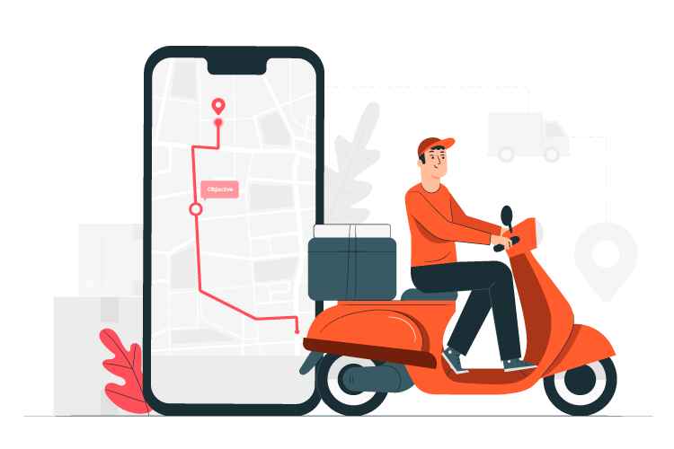

<div class="page-container">
  <nav class="navbar-container">
    <div class="logo-container">
      <div>
        <i class="bi bi-arrow-right-square-fill"></i>
      </div>
      <div
        [ngClass]="
          (isSmallScreen$ | async)
            ? 'h-center small-screen-font'
            : 'h-center large-screen-font'
        "
      >
        <mat-icon color="white">local_dining</mat-icon>
        Delivery App
      </div>
    </div>
  </nav>

  <div class="body-page-login">
    <div class="page-content">
      <div class="floating-type">Be Happy !</div>
      
      <div class="title-welcome">Welcome back</div>
      <div class="title-sign">Sign to continue</div>

      <br />

      <div
        [ngClass]="
          (isSmallScreen$ || isMediumScreen$ | async)
            ? 'actions-section-medium-small'
            : 'actions-section-web'
        "
      >
        <div class="input-group mb-3">
          <div class="input-group-prepend">
            <span class="input-group-text" id="basic-addon1"
              ><mat-icon>supervised_user_circle</mat-icon>
            </span>
          </div>
          <input
            [(ngModel)]="email"
            type="text"
            class="form-control"
            placeholder="Username"
            aria-label="Username"
            aria-describedby="basic-addon1"
          />
        </div>

        <div class="input-group mb-3">
          <div class="input-group-prepend">
            <span class="input-group-text" id="basic-addon1">
              <mat-icon> vpn_key</mat-icon>
            </span>
          </div>
          <input
            [(ngModel)]="password"
            type="password"
            class="form-control"
            placeholder="Username"
            aria-label="Username"
            aria-describedby="basic-addon1"
          />
        </div>
        <div class="forget-container">
          <div class="hover-text">Forgot Password ?</div>
        </div>

        <button
          (click)="login()"
          type="button"
          class="btn login-button background-orange btn-primary"
        >
          Login
        </button>
        <br />
        <div class="sign-up-space" (click)="redirect()">
          <span class="grey-font">Dont' have account ? </span>
          <span class="hover-text">Create a new one here! </span>
        </div>
      </div>
    </div>
  </div>
</div>

<ng-container *ngIf="isSmallScreen$ | async"> small screen</ng-container>

<ng-container *ngIf="isMediumScreen$ | async">medium screen</ng-container>

<ng-container *ngIf="isLargeScreen$ | async"> web screen</ng-container>
